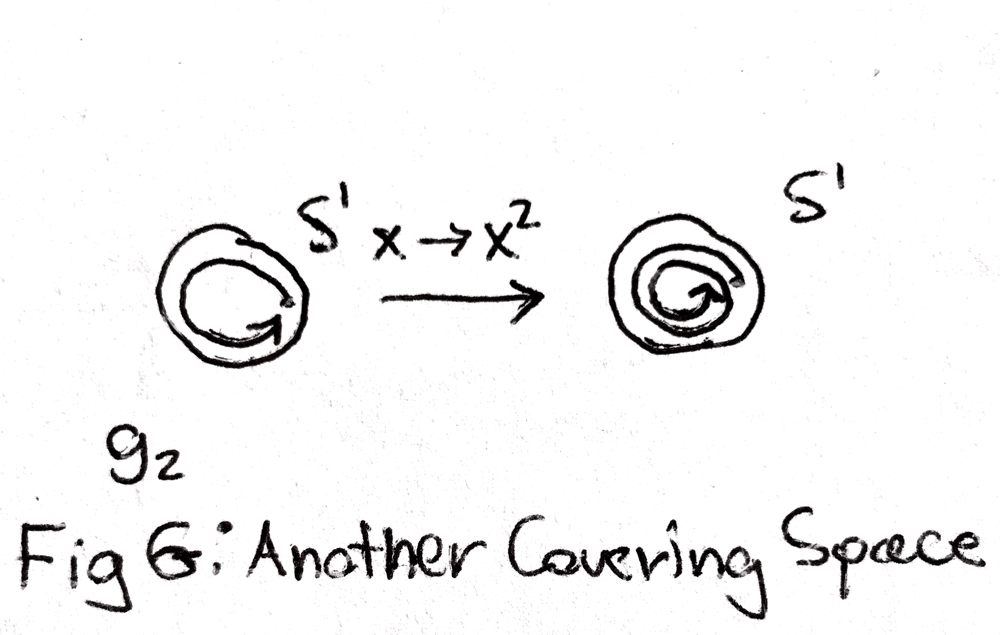

Date: 7/12/17.
Note: There may not be a lot of formal proofs in this write-up, due to the proofs requiring understanding of topological foundations. However most of the main ideas will be presented here. If you’d like a formal presentation of this material, I’d highly recommend reading the first chapter of Allen Hatcher’s Algebraic Topology book which is freely available on his website.
In algebraic topology, people take topological spaces (such as a circle or a sphere) and study them by associating to each topological space an algebraic object such as a group. The fundamental group is one way to associate a group to a topological space.
We can describe the fundamental group as follows: given a space, we can consider oriented paths on this space (if you like, these are map from the unit interval \([0,1]\) to the topological space). If one path ends where another one starts, you can ”multiply” the paths to make a new path that on the first half of the interval does the first path and on the second half of the interval does the second path.
We would like this multiplication to form a group, and in order to do this, we have to make a few restrictions. First we don’t want to consider paths, but rather paths ”up to homotopy”. What this means is that if two paths can be deformed to each other, the should be considered the same.
This deformation is called the homotopy (if you like, it is a map from the unit square \([0,1]\times [0,1]\) to the space that on one side of the square is the first path and on the other side is the second, with the top and bottom being constant). Now, to make sure any two of the paths we consider can be multiplied, we can fix a point on our topological space and require that our paths start and end from this point. Then, any two of these paths can be multiplied together. Up to homotopy, there is inverses, associativity, and identity. In particular, inverses come from the taking a path and looking at the path that goes backwards relative to it. The identity is just the constant path that doesn’t go anywhere. So indeed the collection of paths up to homotopy in this way constitute a group, which we can call the fundamental group! If \(X\) is a topological space, and \(x_0\) a point on it, we can denote the fundamental group of paths starting and ending at \(x_0\) as \(\pi _1(X,x_0)\). A nice property is that if any two points in \(X\) can be connected by paths, the fundamental group doesn’t depend on \(x_0\).
Let’s try to figure out what some fundamental groups are: an easy place to start is \(\RR ^n\). In \(\RR ^n\), any path can be smushed (ie homotopied) to a point, so the fundamental group is trivial (ie the group with one element). How about the circle, which I will call \(S^1\)? Any conjectures as to what its fundamental group is?
Maybe you’ve guessed that the fundamental group is just \(\ZZ \) with addition as the operation. After all, the identity is 0, the path going clockwise once can be called 1, the one going clockwise twice can be 2, the one going counter clockwise can be -1. But are these all of them? How does one go about proving that there aren’t any more?
This problem can be solved using the notion of a covering space. To give an example of a covering space, think of the circle as all the complex numbers \(z\) such that \(|z|\) is 1. We can define a map from \(\RR \) to the circle say \(f\) that sends \(r \in \RR \) to \(e^{2\pi i r}\). In other words, as we move forward in \(\RR \), our map wraps around the circle as in the picture below.
This map is especially nice because for any point \(x \in S^1\), if you look at any point \(r \in \RR \) that gets sent to it, locally it looks the same near \(x\) as it does near \(r\). In this way \(\RR \) is a covering space of \(S^1\).
Why are covering spaces so nice? Well, once again suppose \(x \in S^1\) and suppose \(r \in \RR \) gets sent to it. Now consider a path in \(S^1\) starting and ending at \(x\). This path can be ”lifted” to a path in \(\RR \) meaning the following: There is a path in \(\RR \) starting at \(r\) such that when you send it down through \(f\), you get our original path. In fact, this lift is unique (if you require it to start at r). Moreover, given any two homotopic paths in \(S^1\), they lift to homotopic paths in \(\RR \). Note that the end point of the lift may not be the same as the starting point of the lift, even though sending them down through \(f\) will yield the same point.
The covering map I’ve described is an especially nice one. In particular, two paths are homotopic in \(\RR \) if and only if they have the same starting and ending points, due to the fact that \(\RR \) has a trivial fundamental group as we earlier noted. Moreover, this means that two paths in \(S^1\) are homotopic if and only if we lift them to \(\RR \) and get two paths that have the same end point. A covering space having this property is called a ”universal” covering space. The fact allows us to figure out what the fundamental group of \(S^1\) is as follows: say we choose \(x \in S^1 \subset \CC \) to be \(1\), and \(r \in \RR \) to be \(0\). Then given a homotopy class of paths in \(S^1\) we lift it uniquely to \(\RR \). Note that the new path may not end at \(r\), but it will end at some integer (as those are precisely the points getting sent to \(x\)). Then we can identify this homotopy class of paths with the integers. And indeed we can check that this identification is compatible with the multiplication we have defined earlier between paths. In other words, \(\pi _1(S^1) \cong \ZZ \).
I can describe now another type of covering space of \(S^1\). In particular, consider the map \(g_n\) from \(S^1\) to \(S^1\) sending \(x\) to \(x^n\) (we are viewing \(S^1\) again as a subset of \(\CC \). This is indeed a covering map, as you can see below.

Now in fact, the two types of covering spaces are all of the covering spaces of \(S^1\): every other covering space is (in a precise way) the same as one of the ones I have descibed. Now I will hint toward a correspondence between subgroups of the fundamental group of \(S^1\) and its covering spaces. In particular, we have:
This correspondence will be made precise later.
Now lets discuss universal covering spaces. Given a space, we would like to be able to construct its universal covering space. It turns out that except for exotic examples, we are able to do this. I will describe the construction for \(S^1\), and the process is exactly the same for any other space. We would like to recreate \(\RR \) the universal covering space, from \(S^1\). Our points of the universal covering space \(X\) will be homotopy classes of paths that start at a given point (say 1) and end anywhere on \(S^1\). In order to specify the topology, we need to specify when two paths in \(X\) are ”close” to one another. We will do this in the natural way that makes sense: two classes of paths \(A\) and \(B\) are ”close” if you can draw a small circle around the end point of a path in \(A\), and there is a path in \(B\) that except for in the small circle match (see the picture below). There is a natural map from \(X\) to \(S^1\) that takes a homotopy class of maps to the endpoint in \(S^1\). In fact, this is a covering map.
How does this reconstruct \(\RR \)? Well, we can associate a homotopy class of paths in \(X\) with points in \(\RR \) as follows: given a class of paths, lift them to \(\RR \) and look at the end point in \(\RR \). This gives a map from \(X\) to \(\RR \) that perfectly preserves the topology, so that \(X\) and \(\RR \) can actually be thought of as the same space.
In fact, the other examples of covering spaces of \(S^1\) that I described, where the map was given by \(g_n\), can actually be reconstructed from the universal covering space \(\RR \) as follows: we can take two points in \(\RR \) and identify them if their difference is \(n\) times an integer (we fix \(n\) beforehand). Then we note that our new space, \(\RR \) with some points identified, is actually a circle, because point is identified with something from \(0\) to \(n\), and as soon as we get to \(n\) we wrap around the circle. We also get a covering map which is exactly the same one as for \(\RR \): since we identified our points carefully, this map is well defined as identified points already got sent to the same thing.
I haven’t yet mentioned another property of the fundamental group, which is one of the main reason algebraic topologists like it. I now mention as it is now relevant for describing the relationship between covering spaces and subgroups of the fundamental group. Given two spaces \(X\) and \(Y\), \(x \in X, y \in Y\), and a map \(f\) from \(X\) to \(Y\), the map \(f\) induces a map from \(\pi _1(X,x)\) to \(\pi _1(Y,y)\) by taking a class of paths in \(X\) and applying \(f\) to them (When I say map of topological spaces I mean a continuous function, whereas for a group \(\pi _1\) I mean a group homomorphism). Now if \(Y\) is a covering space of \(X\), we can consider the map from \(Y\) to \(X\) covering \(X\). Suppose it sends \(y \in Y\) to \(x \in X\). This induces a map \(\pi _1(Y,y)\) to \(\pi _1(X,x)\). We can associate the covering space \(Y\) with the image of this induced map, which is a subgroup of \(\pi _1(X,x)\). In the other direction, given a subgroup \(H\) of \(\pi _1(Y,y)\) we can associate it with a covering space similarly to how we reconstructed the covering spaces associated with \(g_n\) by identifying points in \(\RR \). In particular, we can take two points in the universal cover \(Z\), and identify them if their difference (remember that they correspond to homotopy classes of paths in \(X\)) is a member of a homotopy class contained inside \(H\). In fact going from subgroups to covering spaces in this way are inverse processes.
Lets do a fun example of a covering space. Instead of \(S^1\), we can look at the space of two circles ”wedged” together, which I will call \(S^1\vee S^1\). Below are two examples of its covering spaces. To see what the maps from the covering spaces are, I have labelled each circle in \(S^1\vee S^1\) \(a\) and \(b\). The map from each covering space is as follows: each vertex goes to the vertex in between the circles, and each line labelled \(a\) or \(b\) goes to the corresponding circle in \(S^1\vee S^1\).
What do you think the universal covering space of \(S^1\vee S^1\) looks like? How would you describe \(S^1\vee S^1\)’s fundamental group? What subgroups do the covering spaces above correspond to? These are good questions to think about.
Another fun example of a covering space is the following: take a sphere with say 9 holes as below, and consider rotating it 90, 180, and 270 degrees and identifying points that are sent to each other. We will end up with sphere with only three holes, and the map sending a point in the sphere with 9 holes to the identified point makes the sphere with 9 holes into a covering space over the one with 3 holes. Can you come up with similar such examples?